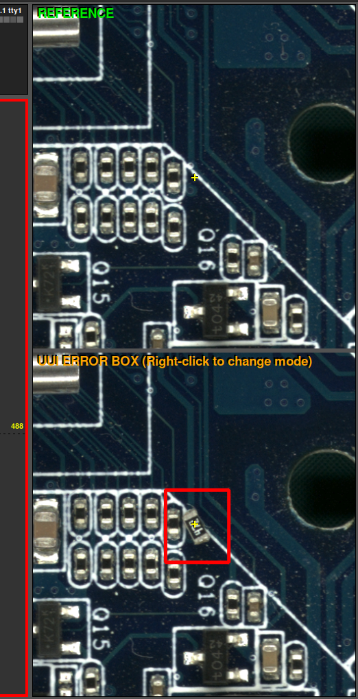
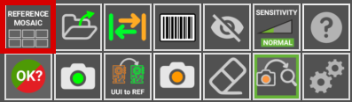
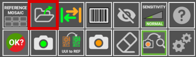
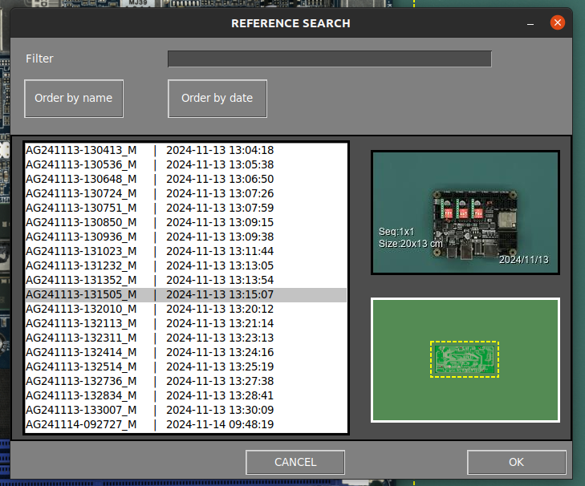
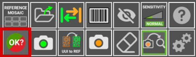
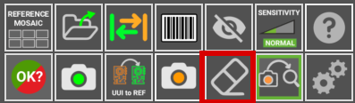

User Interface
Main working areas
The following image describes the main working areas of the AgnosPCB inspection software.

Platform status

This area displays the connection status with the inspection platform and camera. If the connection fails, the icons will turn red. This area also contains the following action buttons:
Start inspection

The Inspection start button triggers the inspection of the current UUI image. This buttom is available when the Auto process button is set OFF. This is useful to avoid spend credits when you are testing how to take pictures of your PCBAs.
Loading REFERENCE by barcode


This button opens a pop-up window for inserting a barcode number. When generating a REFERENCE, any barcode it contains can be read. This barcode will be associated with the REFERENCE and can be loaded using that number with this function. It is also possible to read the barcode with a handheld reader and insert it into this field. More information about this feature here.
Activity log

The activity log area is located in the top right side and shows the current avaible credits and application's operational details such as the status of analysis process.
Main workspace

This is the main section where you work with the REFERENCE and the UUI images, which can be switched by pressing the TAB key on the keyboard or the button on the application. The inspection results are also displayed in this area using crosshairs and numbers next to the detected errors.
Side-by-side comparison

This interface section, is divided in two parts. The top part displays the REFERENCE image, serving as a standard for comparison, while the botton part shows the UUI image. These images are maginified and move in parallel showing exactly the same area in the REFERENCE and UUI where the cursor is pointing in the main workspace.
Buttons panel

Here are located various functions and options designed to optimize your workflow and speed up your tasks. Each feature is defined below:
Reference mosaic


The reference mosaic is used to store REFERENCES as files to quickly find and load any of them. The mosaic menu automatically appears after taking a REFERENCE by using the take REFERENCE photo button or by loading it as a file. In this windows it is also possible to name the taken REFERENCE in the top right part of the window. A REFERENCE stored in the mosaic can be quickly loaded by pressing a F button (F1-F10).
LOAD REFERENCE as file


Use this icon to load a image previously captured as a REFERENCE and it allows you to sort them by name or date. All the REFERENCE images can be found inside the folder APP/REFERENCE in a folder named after the time the picture was taken.
Note
Since version 7, the software does not allows to load images taken from any source other than the platform itself as the images contains specific parametres for the optics. Every REFERENCE image has to be captured using the AI-4050 AOI.
Swap

It toggles between REFERENCE and UUI images in the main workspace area.
Barcode area drawing


Click this button to manually draw a rectangle in the REFERENCE image where there is a barcode. The software will read it and use that code to name the images and include it in the final PDF report. More information about the barcode reading function in the following section.
Exclusion


Creates an exclusion area where the system will not look for faults. You can create as many areas as required. This function is detailed in the following section.
Sensitivity

If the manufacturing process requires more rigorous quality control, you can increase the error detection sensitivity with this feature. By increasing the sensitivity, the software will flag errors that it normally wouldn't with a lower sensitivity setting. There are three levels of senstivity: Normal, High and Very High. It can be set using the 1, 2 ,3 keys of the keyboard. This function is detailed in the following section.
Help

This button will get you to this documentation.
Final result


Once the detected errors has been suvervised by the operator, the inspection can be completed by pressing this button and, depending on the manufacturing criteria, mark the inspected PCBA as OK or NOT OK. After that, the software will create a report that includes the errors reported by the operator on a PDF document. To learn more about this feature go to the following section.
Take a REFERENCE image


This button open a window with the utils to generate a REFERENCE image from a PCB or panel. This function can be activated by pressing r button in the keyboard. In generate a reference section you will learn more about this function.
UUI to REFERENCE

This function turns the current UUI image in a REFERENCE. This is useful when some of the components of the PCBA has been changed for a equivalent and the Neural Network detects it as an error due to a visual difference but the PCBA is correct. To learn more about this feature go to the following section.
Take an UUI image


This function opens a window with a live preview of the inspection area. Once the PCBA is placed correctly, press the Start inspection button to take a photo or photos of the Unit Under Inspection PCBA/Panel. If the auto process button is active, the inspection will start automatically once the UUI image is taken. This feature can also be activated by pressing the s key on the keyboard or the physical action button located on the right side of the AOI. See the following section to learn more about this feature.
Eraser

Deletes a drawn exclusion area.
Auto process

If activated, the next UUI photo taken will be automatically processed. That means that the image will be analyzed for faults right after being taken. We recommend enabling this feature to speed up the inspection process.
Important
For ONLINE UNITS, please note that each UUI image taken will be automatically sent to our server for processing and will consume credits. If you're just testing how to take your photos, we recommend disabling this feature until you're confident the photos covers the PCBA correctly.
Settings

This button opens the settings menu.